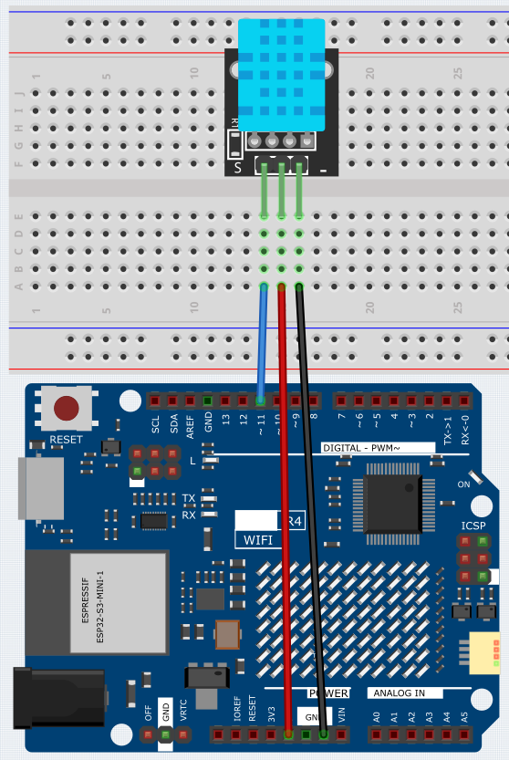
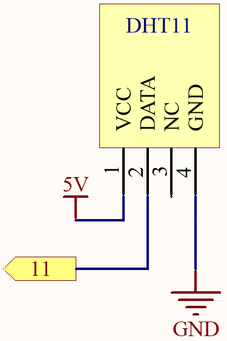

DHT11 Module
Overview
Humidity and temperature are closely related from the physical quantity itself to the actual people’s life. The temperature and humidity of human environment will directly affect the thermoregulatory function and heat transfer effect of human body. It will further affect the thinking activity and mental state, thus affecting the efficiency of our study and work.
Temperature is one of the seven basic physical quantities in the International System of Units, which is used to measure the degree of hot and cold of an object. Celsius is one of the more widely used temperature scales in the world, expressed by the symbol “℃”.
Humidity is the concentration of water vapor present in the air. The relative humidity of air is commonly used in life and is expressed in %RH. Relative humidity is closely related to temperature. For a certain volume of sealed gas, the higher the temperature, the lower the relative humidity, and the lower the temperature, the higher the relative humidity.
The dht11, a digital temperature and humidity sensor, is provided in this kit. It uses a capacitive humidity sensor and thermistor to measure the surrounding air and outputs a digital signal on the data pin.
Wiring
Schematic Diagram
{kind=link}
Code
Note
You can open the file
09_DHT11_Module.inounder the path ofBasic-Starter-Kit-for-Arduino-Uno-R4-WiFi-main\Codedirectly.To install the library, use the Arduino Library Manager and search for “DHT sensor library” and install it.
After the code is uploaded successfully, you will see the Serial Monitor continuously print out the temperature and humidity, and as the program runs steadily, these two values will become more and more accurate.
Code Analysis
Inclusion of necessary libraries and definition of constants. This part of the code includes the DHT sensor library and defines the pin number and sensor type used in this project.
Note
To install the library, use the Arduino Library Manager and search for “DHT sensor library” and install it.
#include <DHT.h> #define DHTPIN 2 // Define the pin used to connect the sensor #define DHTTYPE DHT11 // Define the sensor type
Creation of DHT object. Here we create a DHT object using the defined pin number and sensor type.
DHT dht(DHTPIN, DHTTYPE); // Create a DHT object
This function is executed once when the Arduino starts. We initialize the serial communication and the DHT sensor in this function.
void setup() { Serial.begin(9600); Serial.println(F("DHT11 test!")); dht.begin(); // Initialize the DHT sensor }
Main loop. The
loop()function runs continuously after the setup function. Here, we read the humidity and temperature values, calculate the heat index, and print these values to the serial monitor. If the sensor read fails (returns NaN), it prints an error message.Note
The heat_index is a way to measure how hot it feels outside by combining the air temperature and the humidity. It is also called the “felt air temperature” or “apparent temperature”.
void loop() { delay(2000); float h = dht.readHumidity(); float t = dht.readTemperature(); float f = dht.readTemperature(true); if (isnan(h) || isnan(t) || isnan(f)) { Serial.println(F("Failed to read from DHT sensor!")); return; } float hif = dht.computeHeatIndex(f, h); float hic = dht.computeHeatIndex(t, h, false); Serial.print(F("Humidity: ")); Serial.print(h); Serial.print(F("% Temperature: ")); Serial.print(t); Serial.print(F("°C ")); Serial.print(f); Serial.print(F("°F Heat index: ")); Serial.print(hic); Serial.print(F("°C ")); Serial.print(hif); Serial.println(F("°F")); }